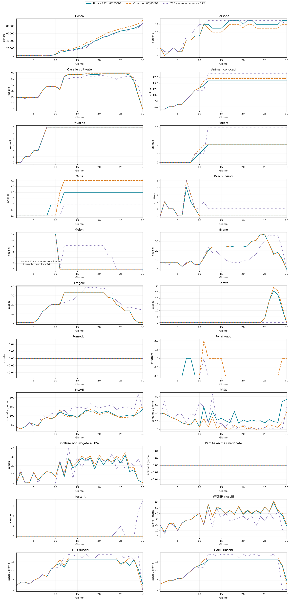
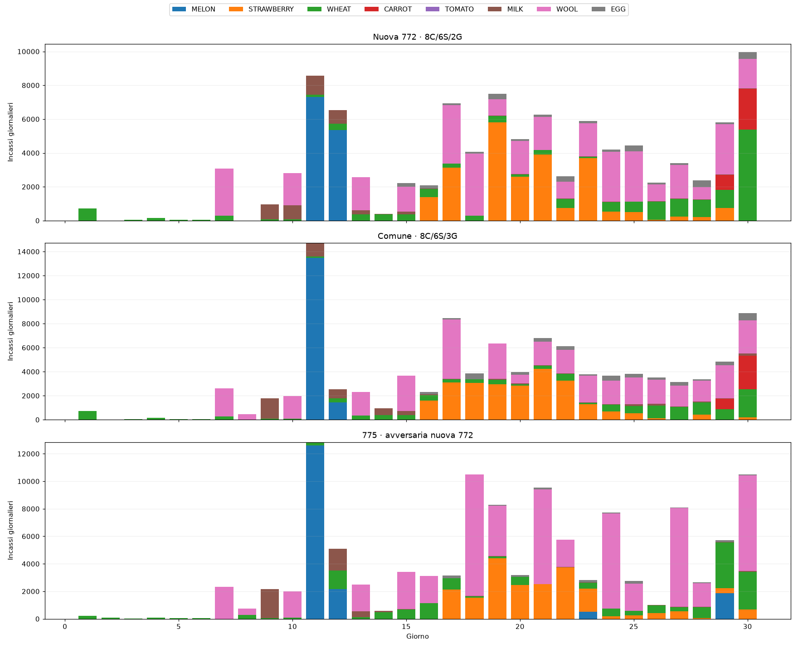
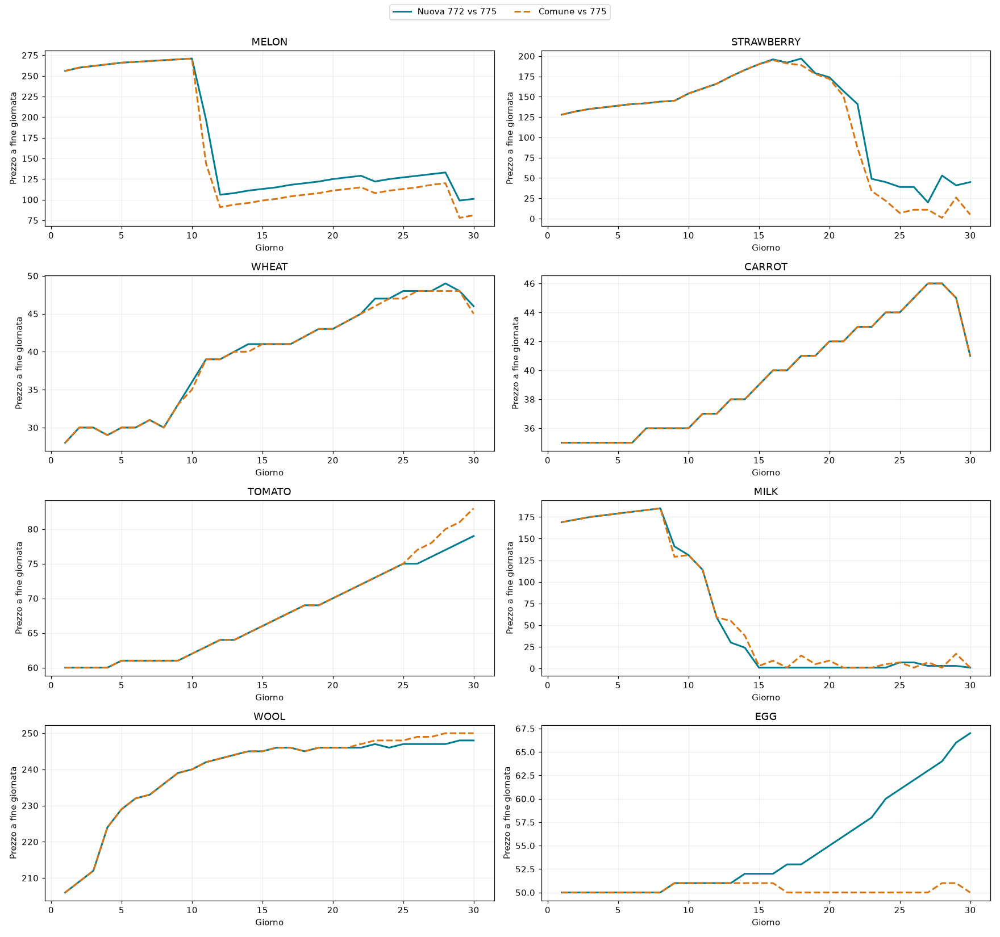
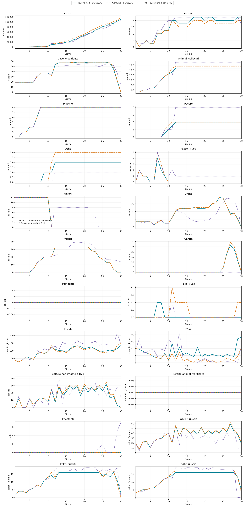
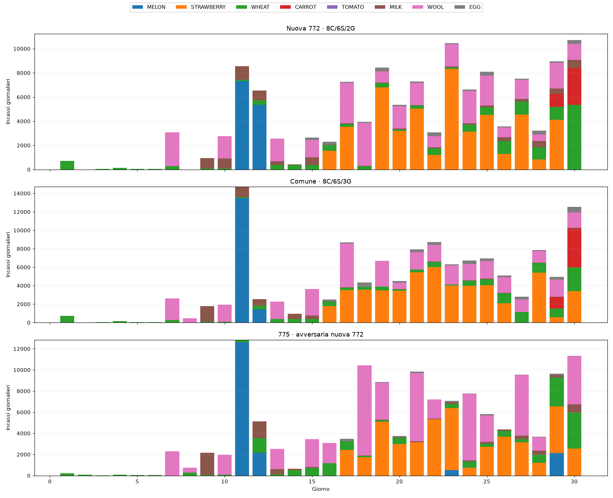
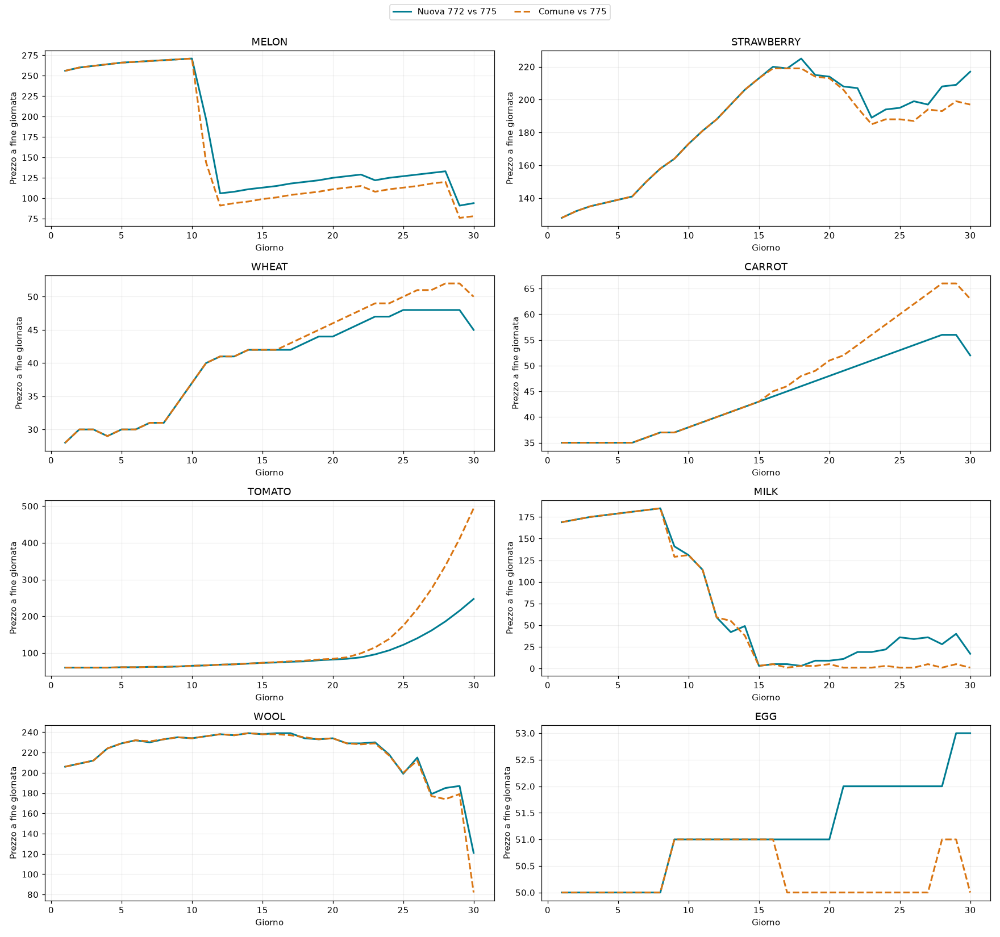

Confronto dei 22 KPI per 30 giorni, sui due seed 180911301 e 180911303. La nuova 772 è la variante con 8 mucche, 6 pecore e 2 oche; “comune” è l’esecuzione della sequenza nativa del rappresentante 107083439, con 8 mucche, 6 pecore e 3 oche. La 775 è il bundle E18.2 congelato.
Ogni seed comprende due partite: nuova 772 contro 775 e comune contro 775. Nei grafici dei 22 KPI la linea 775 viene dalla partita contro la nuova 772; la comune viene dall’altra partita. Stesso seed, ma mercato diverso: non è una partita a tre. I prezzi sono mostrati separatamente per i due mercati.
| Seed | Versione | Cassa finale | Cassa avversaria | Mucche/pecore/oche | Perdite colture |
|---|---|---|---|---|---|
| 180911301 | Nuova 772 · 8C/6S/2G | 85740 | 87172 | 8/6/2 | 2 |
| 180911301 | Comune · 8C/6S/3G | 95229 | 83193 | 8/6/3 | 2 |
| 180911301 | 775 · avversaria nuova 772 | 87172 | 85740 | 8/10/1 | 22 |
| 180911303 | Nuova 772 · 8C/6S/2G | 110220 | 108171 | 8/6/2 | 2 |
| 180911303 | Comune · 8C/6S/3G | 118740 | 102310 | 8/6/3 | 2 |
| 180911303 | 775 · avversaria nuova 772 | 108171 | 110220 | 8/10/1 | 22 |
L’ipotesi da verificare è che distribuire le vendite fra prodotti e giorni riduca la pressione sul singolo mercato. Qui separiamo tre grandezze: caselle/specie presenti nei 22 KPI; incassi giornalieri per prodotto; prezzi osservati nei due mercati. Una coltura presente non implica una vendita nello stesso giorno.
I grafici delle vendite mostrano incassi, non quantità, ed escludono il fertilizzante; il CSV MARKET contiene anche le quantità vendute da entrambi i giocatori e la disponibilità del mercato. I ricavi dipendono sia dai volumi sia dai prezzi. Questi replay permettono di osservare le associazioni, ma non isolano causalmente l’effetto della diversificazione: cambiano anche i volumi, le specie, l’esecuzione e le vendite avversarie.
I 12 meloni della nuova 772 e della comune coincidono fino alla raccolta a D11: il conteggio a fine D11 è zero. Le linee hanno stili distinti e il pannello segnala esplicitamente la sovrapposizione. MOVE/PASS sono comandi richiesti; WATER/FEED/CARE sono azioni riuscite. I KPI riguardano tutta la fattoria.






22 KPI CSV · Vendite, prezzi e scorte mercato CSV · Verifiche · Provenienza e hash replay